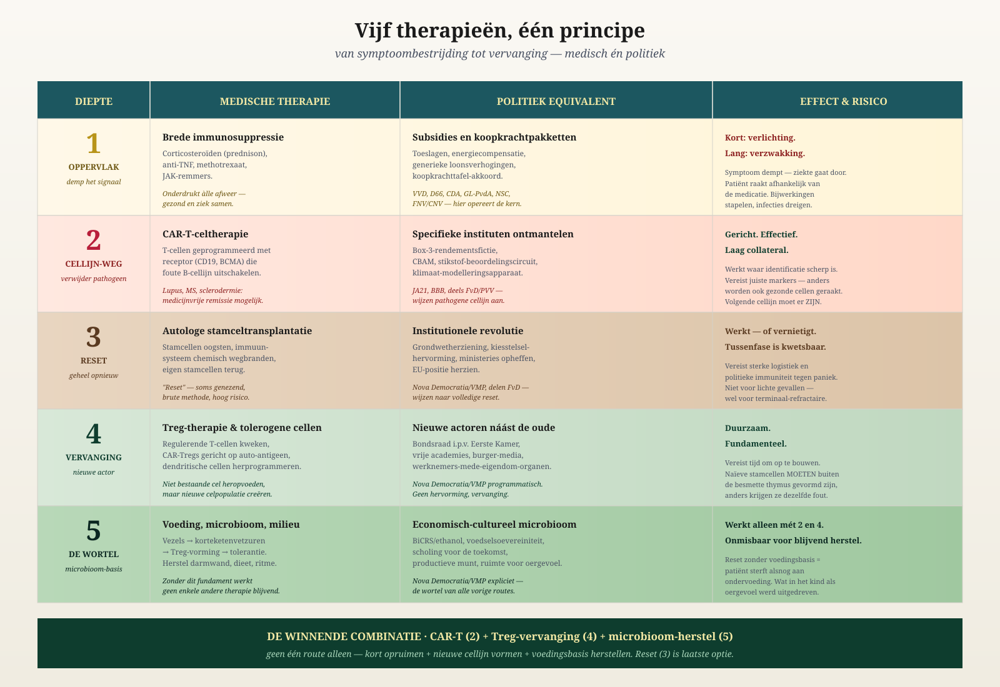
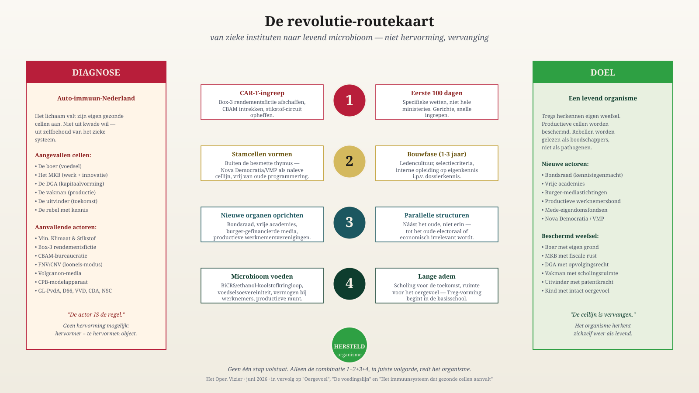

They Are Killing Their Lifeline
Brussels and The Hague have an Autoimmune disease. The patient is called the Netherlands.
Jacobus van Merksteijn · 19 June 2026
They are killing their lifeline — the production that provides the citizen with money.
No rhetoric. Three reports from this week.
15 June 2026
Dutch barns are being dismantled and rebuilt in Poland, Sweden, Croatia, Peru and Ukraine. It is precisely the young barns that are leaving. They are worth the most.
NieuwRechts, 15 June 2026
16 June 2026
ESB does the math: the nitrogen buyout policy costs €212,795 per kilo. A kilo of nitrogen in compound feed costs €1.50. The policy is 140,000 times more expensive than the problem.
ESB, 16 June 2026
12 June 2026
Rabobank: agriculture’s added value down 20% in a single year. Fertiliser up 26%. Energy up 17%. Those who remain pay more for less.
Nieuwe Oogst / Rabobank, 12 June 2026
One week. Three sectors of the same victim.
And the farmer is not alone. Owner-director: business succession taxed at up to 70%. Box 3: tax on profits that do not exist. Industry: CBAM is driving Tata, Nyrstar and the chemical sector away. Skilled tradesperson: regulatory pressure and VAT are breaking the SME sector. Brussels: approves more buyouts, blocks cultivated meat, forces CBAM through.
One leadership. Six sectors. One pattern.
The citizen has one lifeline: production. That is where the money comes from for healthcare, education, defence and the state pension. No production, no money, no society. Do the math.
That lifeline is now being severed by the leadership that lives off it.
And for what? For targets from 2019, in the climate of 2026. The plants have already moved. The tree line is shifting northward. Nature is moving with it. The leadership is not. It is buying out farmers on the basis of calculation models that reality has already overtaken. That is not stubbornness. That is the clinical picture.
Why Does No One Think?
How is this possible? Educated people. Advisers. Models. And yet this.
Real thinking requires three things.
Observing what is there. The sick leadership sees only its own models.
Doubting one’s own assumptions. In the sick leadership, doubt is treason.
Taking responsibility. In the sick leadership, responsibility lies nowhere — it came from the model, it was in the guideline, it was mandated by Europe.
Those who do not observe do not doubt. Those who do not doubt do not decide. Those who do not decide do not think.
That is why calls for “better policy” do not work. A system that does not think will not think better simply because you ask it to.
The Disease Has a Name
Medicine knows this. Autoimmune disease. The body attacks its own organs. Pancreas, joints, myelin, thyroid, intestine.
The attacking cells are not malignant. They are doing their job. The problem lies in recognition. The body’s own tissue is mistaken for an enemy.
The immune system cannot see its own mistake. Every attempt at correction is treated as a threat and neutralised.
Read this description again. Replace “body” with “the Netherlands”. Replace “immune system” with “Brussels and The Hague”. It fits word for word.
This is not a metaphor.
This is a clinical disease profile.
Untreated, it leads to death — within years for a human being, within a decade for a country.
Why a New Minister Solves Nothing
The cell line is sick, not the individual cell.
A new minister comes from the same university, the same career path, the same models, the same committees. He cannot do anything but make the same decisions. The ministry produces them, not he.
Medicine learned this long ago: broad immunosuppression — dampening the symptoms — makes the patient weak and dependent. Healing requires something else.
Remove the cell line and form a new one.

Five ascending treatment pathways — medical and political side by side.
The Treatment
Five medical pathways. Five political translations.
1 · Suppress the Symptoms
Subsidies, allowances, purchasing-power packages. Prolongs the disease. Makes the patient dependent on the attacker. Do not do it.
2 · Remove Specific Institutions
Just as CAR-T kills the faulty B-cell line. Specifically, this week:
- Lbv buyout: stop.
- Box 3 fiction: abolish it.
- CBAM: withdraw it.
- Scale-back of BOR: reverse it.
- AERIUS: start again, with different premises.
Five decisions. One hundred days. Non-negotiable.
3 · Complete Reset
Constitution, electoral system, abolish ministries. It works — or destroys. Only if pathways 2 and 4 are rejected. Kept in reserve.
4 · New Organs Alongside the Old
Do not reform the FNV — establish a productive workers’ movement alongside it. Do not try to persuade the CPB — establish a Bureau for a Productive Future that does properly calculate BiCRS. Do not pluralise the NOS — create citizens’ foundations for the media. Do not modify the Senate — establish a Federal Council in which farmers, SMEs, skilled workers and inventors hold seats.
Construction alongside demolition. The old becomes irrelevant of its own accord.
5 · The Nutritional Base
Own energy through BiCRS. Own food. A productive currency. Wealth in the hands of workers and SMEs. Without this, nothing will hold.
The Prescription
- Pathways 2 + 4 + 5. Combination. In that order. Quickly.
- Deliberately phase out pathway 1. Whoever makes the patient dependent feeds the disease.
- Keep pathway 3 in reserve. Only if the patient actively refuses 2 and 4.

From diagnosis to destination — four steps, no more.
What If We Do Nothing?
The course of the disease is documented. Other countries have already gone through it.
Productive people leave. Essential organs fail. Healthcare waiting lists grow. Defence cannot pay for itself. Capital follows the farmers to Poland.
Ten years. After that, recovery will no longer be possible.
Over to You
The leadership will not heal itself. An autoimmune system does not recognise its own mistake.
You do.
You are the farmer whose barn disappears to Poland. The owner-director whose succession has been made unaffordable. The SME owner whose bill explodes. The worker whose wages shrink.
You are also the healthy counterforce. The Treg cell capable of carrying the recovery. But only if you rouse yourself.
Recognise the disease. Name it. Demand the treatment. Do not wait for the patient.
They are killing their lifeline.
Whoever reads this sentence and thinks “it will probably not be so bad” has already gone along with the disease.
Whoever reads it and knows what to do is a Treg in the making.
Recovery begins with you.